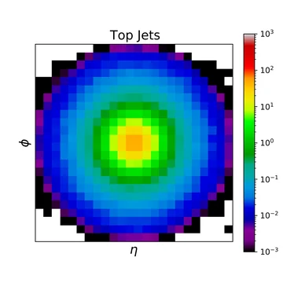
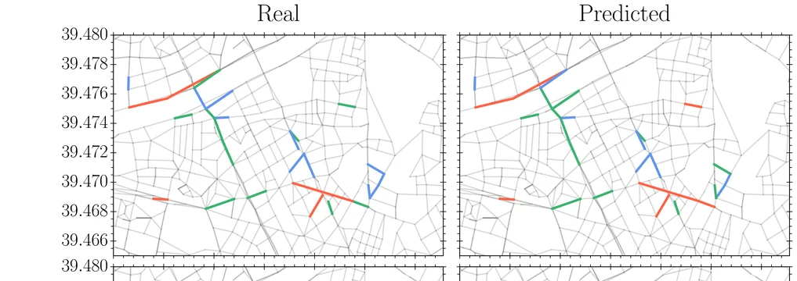
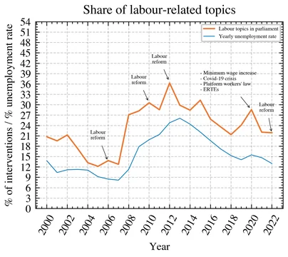
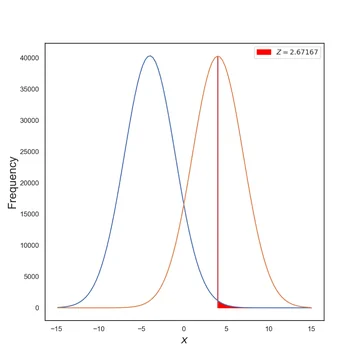
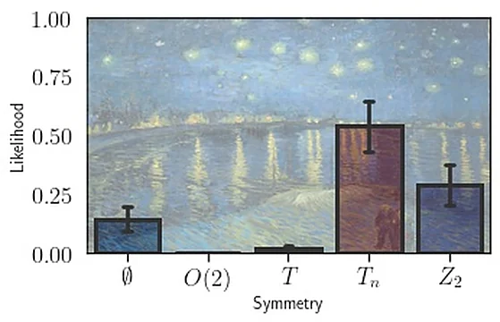
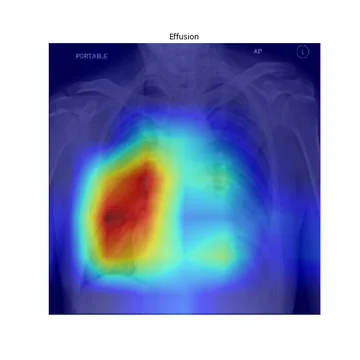

Sistemas LLM adaptados al sector
Diseñamos sistemas LLM adaptados a cada sector para entornos regulados y de alta complejidad, con conocimiento especializado, validación experta y foco en trazabilidad.
Spin-off de la Universitat de València
Diseñamos, validamos y desplegamos sistemas de IA para sectores regulados, instituciones públicas y organizaciones que operan sistemas técnicos complejos, con la trazabilidad y la supervisión que esos entornos exigen.
Con el respaldo de la Universitat de València y el CSIC, y basados en investigación publicada.
Respaldo institucional
Aprobada como la primera spin-off de IA de la universidad, abril de 2026.
Desarrollada en el IFIC, Instituto de Física Corpuscular (UV–CSIC), y protegida por derechos de propiedad intelectual.
Parque científico de la Universitat de València, Paterna.
INFERA Labs desarrolla LLMs a medida y sistemas de IA especializados para sectores regulados, instituciones públicas y organizaciones que operan sistemas técnicos complejos. Nuestro portfolio combina gobernanza de IA, detección de anomalías, modelado predictivo, análisis multimodal, validación experta y formación práctica en el uso eficaz de asistentes de IA y agentes de IA en entornos orientados al despliegue.
Siete áreas en las que llevamos problemas técnicamente exigentes a sistemas fiables y desplegables.
Diseñamos sistemas LLM adaptados a cada sector para entornos regulados y de alta complejidad, con conocimiento especializado, validación experta y foco en trazabilidad.
Ayudamos a estructurar sistemas de IA monitorizables y auditables, preparados para marcos de gobernanza, documentación de riesgos y evolución regulatoria.
Desarrollamos métodos para detectar eventos raros, desviaciones operativas y comportamientos anómalos en datos multivariantes, temporales o de sensor.
Aplicamos modelos predictivos, simulación y análisis con incertidumbre a redes, infraestructuras y sistemas dinámicos complejos.
Integramos expertos en el ciclo de diseño, ajuste y validación para asegurar utilidad operativa y fiabilidad en despliegues reales.
Construimos soluciones para datos científicos, señales, sensores e integración multimodal en contextos técnicamente exigentes.
Formación práctica en el uso eficaz de asistentes de IA y agentes de IA para organizaciones con cualquier nivel de madurez en IA. Ofrecemos formatos aplicados, desde sesiones introductorias hasta talleres avanzados adaptados a equipos técnicos, administrativos, de investigación o dirección.
Cuatro áreas en las que ya hemos construido y publicado sistemas en funcionamiento. Cada una enlaza con la investigación que la respalda.
Alertas ambientales y de tráfico en tiempo real sobre las redes de sensores que la ciudad ya tiene: predicción, umbrales y avisos sobre los que el personal puede actuar.
Desplegado en València · Neural Computing and Applications, 2025
Hablar de un piloto municipalSistemas de predicción que cuantifican su propia incertidumbre, para que quien opera sepa no solo qué se predice, sino hasta qué punto puede fiarse.
Space Weather, 2023 · predicción de tormentas geomagnéticas
Hablar de un sistema de alerta tempranaAprendizaje automático sobre datos de instrumentación y sensores: selección de eventos, reconstrucción y calidad de imagen en entornos de medida exigentes.
Radiation Physics and Chemistry, 2025 · imagen con cámara Compton
Hablar de un proyecto clínico o instrumentalModelos de lenguaje que leen legislación, normas y guías técnicas y las convierten en obligaciones, pasos y plazos, cada uno trazable hasta su fuente.
Metodología en co-titularidad con el CSIC · IA sobre corpus parlamentarios, 2026
Hablar de un flujo de cumplimientoCómo empezamos
Un encargo de alcance cerrado que responde a una pregunta: ¿es este problema resoluble con IA, con tus datos y a un nivel que puedas desplegar de verdad? Recibes una evaluación por escrito: qué es viable, qué haría falta, qué puede salir mal y si merece la pena construirlo.
Alcance y precio acordados antes de empezar. Si la respuesta es que no, también te la damos por escrito.
Solicitar una evaluaciónCada paso se acuerda solo cuando el anterior ha dado resultados.
Combinamos conocimiento curado por expertos, adaptación iterativa de modelos y validación orientada al uso real para desarrollar sistemas de IA especializados en contextos técnicos e institucionales exigentes.
Nuestro enfoque prioriza la fiabilidad operativa, la trazabilidad, la monitorización y la capacidad de ajuste continuo frente a requisitos técnicos, regulatorios y organizativos cambiantes.
El conocimiento especializado del sector, curado por expertos, orienta el alcance del sistema, la selección de datos y el comportamiento práctico del modelo.
Los modelos se ajustan, prueban y reevalúan frente a flujos reales para mantener su utilidad bajo condiciones operativas.
Diseñamos sistemas con supervisión, monitorización y despliegue robusto donde importan la fiabilidad y la responsabilidad operativa.
Los sistemas de IA en entornos regulados requieren algo más que rendimiento técnico. Deben ser auditables, supervisables y capaces de integrarse en marcos de gobernanza, gestión del riesgo y seguimiento continuo.
Apoyo a estructuras internas de gobernanza, modelos de control y vías de implantación acordes con despliegues de alto impacto.
Prácticas documentales, generación de evidencias y registros de responsabilidad alineados con despliegues responsables.
Enfoques de seguimiento operativo para observar el comportamiento del sistema, identificar deriva y mantener el rendimiento a lo largo del tiempo.
Soporte orientado a la preparación de procesos, registros y controles para equipos que trabajan hacia marcos como ISO/IEC 42001.
Cada afirmación enlaza con el artículo o el registro oficial del que sale, y con la fecha de esos datos. Marca si una obligación ya rige, si regirá en una fecha cierta o si todavía es un proyecto de ley. Y cuando la pregunta necesita criterio humano, se detiene en lugar de responder por responder. Es una demostración, no un servicio de asesoramiento.
Dos cuerpos normativos sin relación entre sí, el mismo método en ambos
Las respuestas están calculadas de antemano sobre el Reglamento (UE) 2024/1689 consolidado a 27 de julio de 2026, el BOE y el registro oficial del MAPA. Ninguna ha sido validada por un experto todavía, y así se indica en la propia demostración.
Contáctanos si quieres hablar de un sistema así para tu sectorNuestra dirección científica se apoya en investigación publicada y revisada por pares. Verónica Sanz, nuestra Chief Scientific Advisor, es catedrática de Física Teórica en la Universitat de València e investigadora en el IFIC (UV–CSIC).






Una figura de cada artículo, todos con Verónica Sanz entre sus autores. Fuentes: arXiv:2007.14462, 2309.02010, 2203.03669, 2103.06115, 1906.11282, y el preprint abierto del estudio sobre discurso parlamentario. La pintura mostrada es de dominio público.
Ver publicaciones y métricasINFERA Labs reúne profundidad científica, criterio técnico y experiencia en el desarrollo de proyectos de IA avanzada.
CEO y cofundador
Jaime Alcalá es CEO y cofundador de INFERA Labs. Formado como físico en la Universitat de València y con un MBA por la Universidad Nebrija, trabaja en la intersección entre el pensamiento científico, la estrategia de innovación y el desarrollo de proyectos. Su experiencia incluye la estructuración de iniciativas técnicas complejas, la preparación de propuestas competitivas y el desarrollo de alianzas en entornos de investigación, tecnología e innovación. En INFERA Labs se centra en traducir capacidades tecnológicas avanzadas en proyectos viables, colaboraciones y vías de despliegue, conectando la IA avanzada con necesidades sectoriales concretas.
Chief Scientific Advisor y cofundadora
Verónica Sanz es Chief Scientific Advisor y cofundadora de INFERA Labs. Es catedrática de Física Teórica en la Universitat de València e investigadora en el Instituto de Física Corpuscular (IFIC, UV-CSIC). Su trabajo combina modelización científica, análisis de datos e inteligencia artificial, con experiencia en física de partículas más allá del Modelo Estándar, teorías efectivas, materia oscura, axiones y métodos avanzados de IA aplicados a problemas complejos y de alto impacto. En INFERA Labs aporta la visión científica y técnica que articula la aproximación de la empresa a la IA adaptada al sector, la detección de anomalías, la inteligencia sobre sistemas complejos y las herramientas robustas de apoyo a la decisión en entornos exigentes.
Ofrecemos programas de formación práctica para organizaciones que quieren adoptar herramientas de IA de forma eficaz, desde sesiones introductorias hasta formatos más avanzados orientados a flujos de trabajo. Adecuado para equipos con cualquier nivel de experiencia previa.
Oferta de formación
Contáctanos para formatos de grupo y presupuestos a medida.
Solicitar presupuestoContáctanos para hablar sobre soluciones de IA a medida, colaboraciones técnicas o formación para tu organización.
También ofrecemos formación práctica en asistentes y agentes de IA, desde sesiones introductorias hasta talleres avanzados para equipos con cualquier nivel de experiencia.